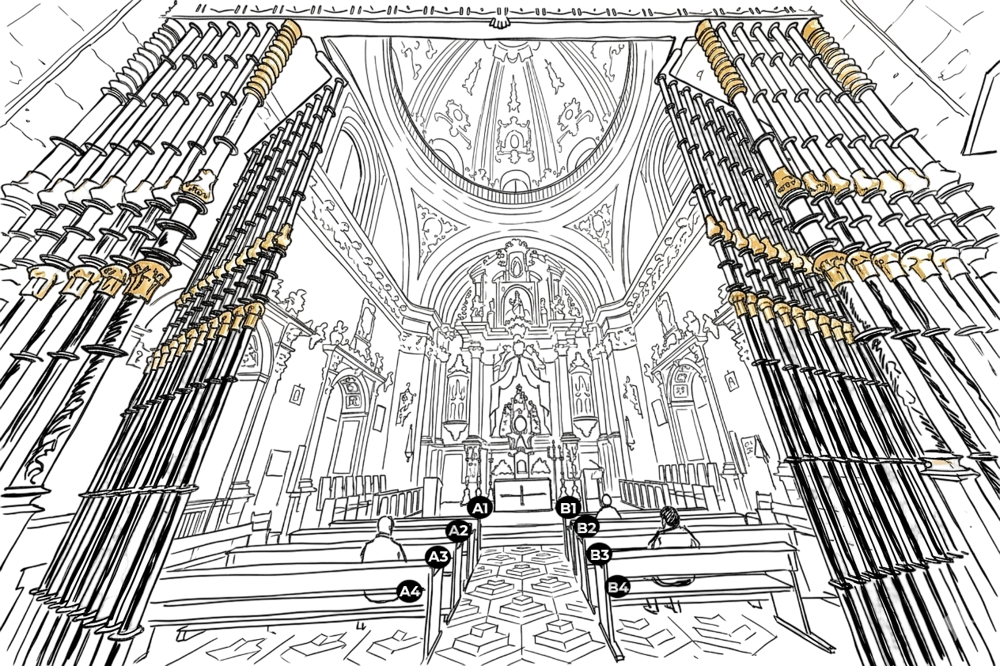
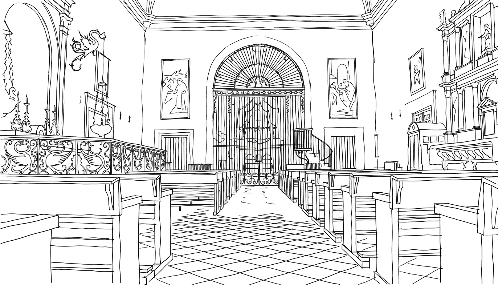

ALTAR
Mauro Stephany Alessandro Manuela
Catedral de Segovia
A las 12:00, rodeados de nuestras familias y amigos más cercanos, comenzará la ceremonia en la Catedral de Segovia.
| HORA | ACTIVIDAD | LUGAR | MÚSICA | PERSONAS |
|---|---|---|---|---|
| 11:20 – 11:40 | Organización final entrada invitados | Catedral | Órgano suave ambiente | Todos |
| 11:40 | Alessandro ya debe estar adentro de la catedral y listo | Catedral de Segovia | — | Alessandro + Laura (fotógrafa) + Fernando (videógrafo) |
| 11:55 – 12:00 | Preparación entrada novia | Entrada capilla | — | Stephany + padre + damas |
| 11:50 | Entrada Alessandro | Catedral (capilla) | Purple Rain (piano instrumental) | Alessandro + madre |
| 12:55 | Entrada damas de honor | Catedral (capilla) | A Thousand Years (instrumental) | Katherine + Susana + Beatrice + Fiorella |
| 12:00 | Entrada novia (campanadas) |
Catedral (capilla) | Marcha nupcial | Stephany + padre |
| 12:05 – 13:00 | Ceremonia | Catedral (capilla) | Órgano / música litúrgica | Todos |
Stephany → caminando desde Capuchinos junto a su padre
Alessandro → desde Real Hotel Segovia
Damas de honor → entrada previa
Alessandro + madre
Katherine (Lectura Salmo)
Beatrice (Anillos)
Fiorella (Petalos)
Susana (Petalos)
Stephany + padre

Mauro Stephany Alessandro Manuela
Josefina RamosJosefina
Katherine PizanKatherine
Enzo LizamaEnzo
Oliviero AlbaneseOliviero
Andrea AlbaneseAndrea
Sara PerdaSara
Ruben BroncanoRuben
Victoria RamosVictoria
VanessaVanessa
SimoneSimone
ManuelManuel
SofiaSofia
Sergio MaquinSergio
FiorellaFiorella
AldoAldo
AzzurraAzzurra
ClaudiaClaudia
SamueleSamuele
Manuel CaridiManuel
Beatrice ArenaBeatrice
Susana NietoSusana
Miguel ChéronMiguel
Diego SimangasDiego

Los demás se pueden sentar como quieran
| MOMENTO | MÚSICA |
|---|---|
| Entrada de invitados | Canon en Re mayor – Johann Pachelbel |
| Entrada del novio | Purple Rain |
| Entrada de las damas de honor | A thousand years (Perri) |
| Entrada de la novia | Marcha nupcial – Felix Mendelssohn |
| Aleluya* | Alleluia Taizé (órgano) |
| Consentimiento (“lo que Dios ha unido”) | Gymnopédie No.1 – Erik Satie |
| Ofertorio | Ave María – Franz Schubert |
| Sanctus | Misa de Angelis |
| Agnus Dei | Gregoriano |
| Comunión | Hallelujah - Leonard Cohen |
| Postcomunión (si hay tiempo) | Nuvole Bianche |
| Bendición | Adagio Albinoni |
| Firmas | Beauty and the Beast |
| Salida ceremonia | Can't Help Falling In Love |
| MOMENTO | IDIOMA | PERSONA |
|---|---|---|
| Primera lectura | IT | Oliviero |
| Salmo | ES | Katherine |
| Segunda lectura | ES | Josefina |
| Petición 1 | IT | Vanessa |
| Petición 2 | ES | Miguel |
| Petición 3 | IT | Nose |
| Petición 4 | ES | Victoria / Rubén |
| Petición 5 | IT | Samuele |
| Petición 6 | ES | Sofia |
| Petición 7 | IT | Manuel |
| Petición 8 | ES | Claudia |